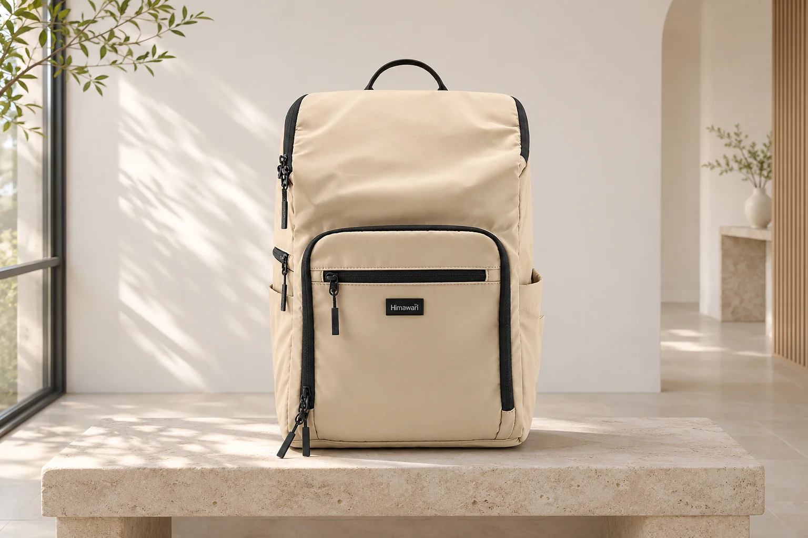
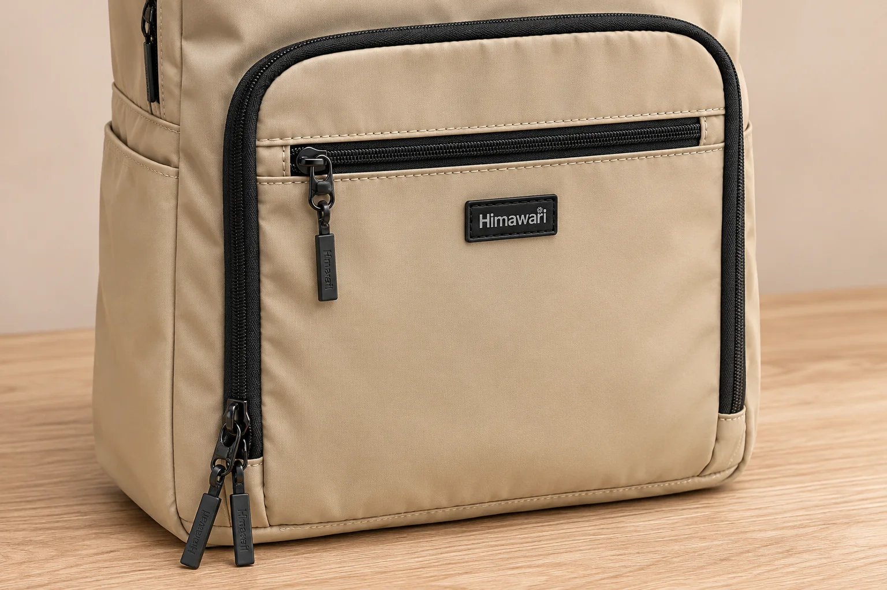
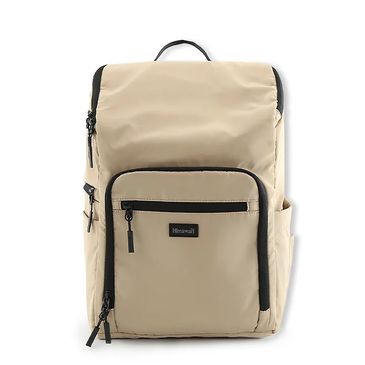

백팩 앞에 지퍼가 두 줄이면 어디로 열리는 걸까

No.1223 베이지 사진의 앞면에는 검은 선이 두 줄 보입니다. 하나는 앞판 가장자리를 둥글게 둘러 내려갑니다. 다른 하나는 그보다 안쪽에서 가로로 뻗습니다. 둘 다 검은색이라 화면을 작게 보면 앞주머니 지퍼가 겹쳐 보입니다. 상품 설명에 ‘앞 포켓’ 한 줄만 적혀 있기도 합니다. 그 문구만으로는 어느 쪽으로 손이 들어가는지 알기 어렵습니다. 입구 끝에서 시작해 지퍼가 어디까지 이어지는지 확인하면 사진으로 알 수 있는 범위가 넓어집니다.
바깥쪽을 도는 지퍼
원본 사진에서 바깥 검은 선은 가방 앞쪽의 넓은 면을 따라 위 모서리를 지나 양옆으로 내려옵니다. 왼쪽 아래에는 손잡이 두 개가 가까이 있습니다. 화면에서 이 부분을 확대해 검은 선이 손잡이와 이어지는지 보세요. 사진에 따라 몸판 바닥까지 이어진 테두리처럼 먼저 보이기도 합니다. 손잡이의 위치를 찾으면 어느 경로가 여닫히는지 짐작할 수 있습니다. 가방 전체의 윗입구에도 검은 선이 보입니다. 손잡이에서 출발해 한 선씩 따라가 보세요.
가방을 닫은 채 옆에서 찍은 사진도 보세요. 바깥 지퍼 뒤의 앞판이 얼마나 도드라지는지 살펴보기 좋습니다. 다만 두툼하게 보인다고 특정 크기의 물건이 들어간다고 보기는 어렵습니다. 가방이 꽉 차 있는 사진이라면 안쪽에 든 짐이 앞판을 미는 정도도 달라집니다. 입구가 열리는 모양을 확인해야 한다면 같은 지퍼를 열어 앞판을 움직인 사진을 찾아보세요. 두툼한 측면 사진에서는 앞판이 어느 방향으로 움직이는지 알기 어렵습니다. 앞서 살핀 것과 같은 지퍼를 열었는지도 사진에서 확인합니다.

안쪽을 가로지르는 지퍼
두 번째 검은 선은 앞면의 위쪽을 거의 수평으로 가로지릅니다. 작은 검은 로고는 이 선 아래에 있습니다. 지퍼 손잡이는 왼쪽에 달려 있습니다. 바깥쪽 지퍼의 둥근 꺾임을 따라가다 로고 쪽으로 같은 선이 계속된다고 생각하면 두 입구를 혼동합니다. 가방을 정면에서 봅니다. 가로선과 둘레선 사이에 베이지색 원단이 있나요? 두 줄 각각의 손잡이도 찾아봅니다. 색이 비슷한 제품을 볼 때에는 지퍼 끝의 위치를 눈여겨보세요. 사진을 바꿔 볼 때도 같은 끝을 찾아봅니다.
가로 지퍼를 열었을 때 바로 손을 넣을 수 있는지도 확인해 볼 만합니다. 열린 사진에는 그 지퍼가 안쪽 공간의 어느 쪽에서 끝나는지 드러날 수 있습니다. 바깥 지퍼를 닫은 채로도 가로 지퍼를 따로 열 수 있는지 그 장면에서 확인해 보세요. 가로선이 짧아 보인다고 세로로 얕은 주머니라고 말하기엔 근거가 부족합니다. 닫힌 사진에서 보이는 것은 지퍼가 달린 자리입니다. 손이 닿는 깊이와 뒤쪽 칸막이는 손잡이를 움직인 뒤를 보여 주는 컷이나 안내로 확인해야 합니다.
정면 사진과 사용 장면을 짝지어 보기
휴대전화를 앞에서 꺼낼 계획이라면 가방을 한 손으로 받쳐 보세요. 그 자세에서 다른 손이 지퍼 끝까지 닿는지 확인합니다. 접은 우비는 입구에 맞춰 휘어 넣고 뺄 수 있습니다. 단단한 케이스는 돌려 넣다가 입구에서 멈추는 각도가 있을 수 있습니다. 물건의 두께까지 넣어 비교하려면 안에서 넓게 보이는 사진보다 입구가 열린 폭이 보이는 장면이 필요합니다. 그 장면이 가로 지퍼의 것인지, 바깥쪽 지퍼를 펼친 장면인지 함께 확인하세요. 사진 여러 장에 같은 앞판이 나옵니다. 어느 지퍼를 열었는지에 따라 필요한 정보를 읽는 자리는 달라집니다.
판매 페이지에 정면 컷과 내부 동영상이 있다면 두 자료를 나란히 보세요. 동영상에서 손이 어디로 가나요? 왼쪽 아래인지, 로고 바로 위인지 보면 어느 지퍼를 열었는지 가려낼 수 있습니다. 영상에 내용물만 크게 나오는 경우도 있습니다. 손잡이가 잘리면 두 장의 사진을 억지로 연결하지 않습니다. 그럴 때에는 ‘가로 지퍼만 열어 둔 사진’을 요청해 보세요. 입구를 특정하면 앞 포켓이 있다는 설명보다 자세한 답을 얻을 수 있습니다.
이미 비슷한 구조의 가방을 쓰고 있다면 벤치에 받쳐 둔 상태에서 하나씩 열어 볼 수 있습니다. 먼저 가로 지퍼만 움직여 손이 어디까지 들어가는지 보세요. 가로 지퍼를 닫은 뒤 둘레 지퍼를 움직여 봅니다. 지퍼를 열어 둔 채 급히 가방을 들어 올리면 작은 물건이 빠질 수 있습니다. 가방을 거의 비운 상태에서 아래로 열린 입구를 확인하는 편이 편합니다. 먼저 정면에서 두 입구가 열리는 모양을 봅니다. 그다음 서서 가방을 잡고 어느 쪽 손이 먼저 닿는지 비교하세요.

남겨 두기 좋은 한 가지 비교 기준
No.1223 베이지의 제조사 외부 치수는 가로 29cm, 세로 40cm, 폭 14cm입니다. 가방을 둘 자리를 가늠할 때 쓰는 치수입니다. 앞에서 보이는 두 지퍼의 실제 입구 폭이 필요하면 열린 사진과 별도 안내에서 확인하세요. 자주 꺼낼 물건이 있다면 평소 손이 가는 높이와 입구가 열리는 방향을 먼저 적어 보세요. 정면 사진에는 두 지퍼가 다 잘 보입니다. 막상 가방을 들면 짧은 가로 입구 쪽에 손이 먼저 닿을 수 있습니다. 공개 외부 치수로는 그 차이를 짐작하기 어렵습니다.
앞주머니가 여러 개인 가방을 보고 있다면 하루에 가장 먼저 열어야 할 입구 하나를 떠올려 보세요. 그 입구의 위치를 잡아두면 가방끼리 비교하기가 수월합니다. 지퍼 두 줄이 각자 무엇을 여는지 알면 내용물의 자리와 꺼내는 순서를 나눌 수 있습니다. 사진에서 손잡이 두 개가 가까이 있어도 같은 위치의 장식으로 지나치지 말고, 손잡이에서 지퍼 끝까지 검은 선을 각각 따라가 보세요. 열린 입구까지 확인해야 할 때는 지퍼 손잡이와 포켓 안쪽이 함께 담긴 사진을 찾으면 됩니다.